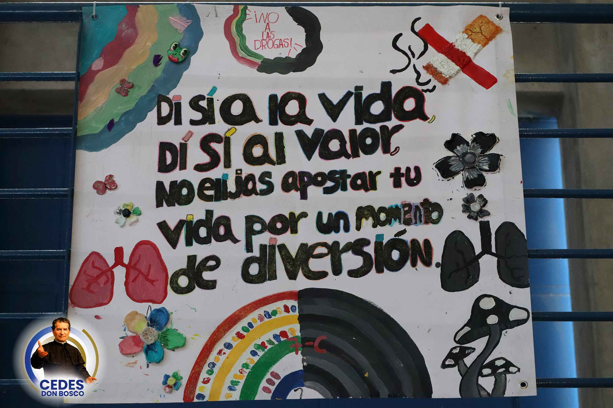
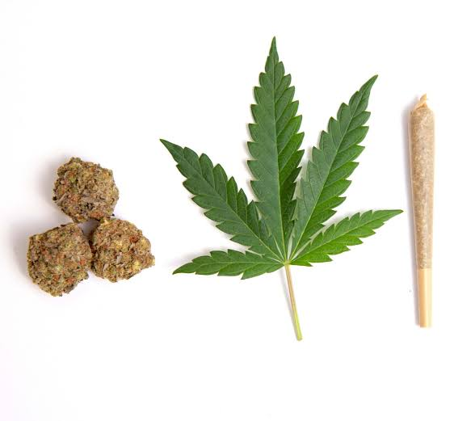
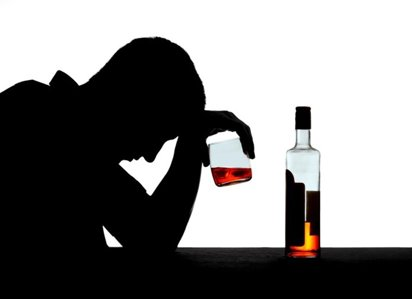
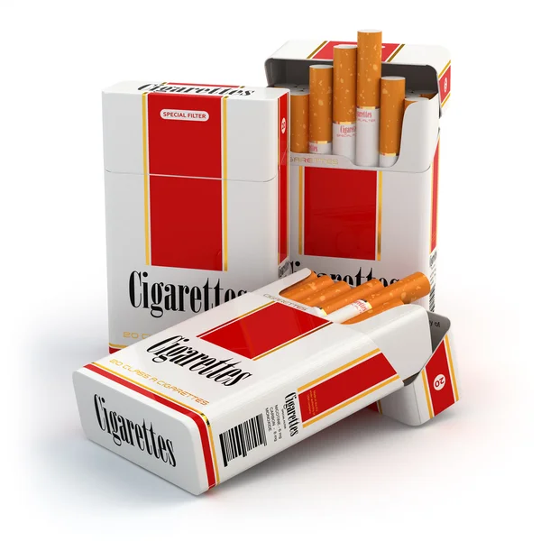
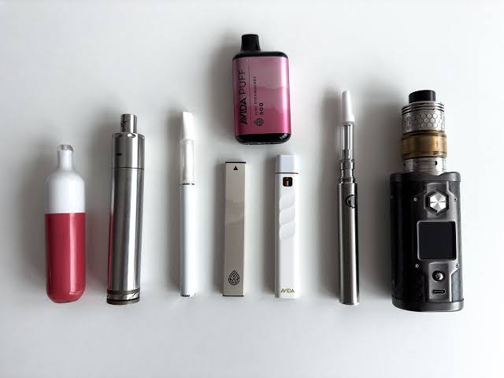

CEDES Don Bosco
Campaña
RETO
Una campaña para concientizar sobre la importancia de la prevención del consumo de drogas en menores.
HAZ DE TU VIDA LA MEJOR HISTORIA SIN DROGAS
26RE
TO
TO


Video de la campaña
Una historia sin drogas
Una campaña para generar conciencia en los estudiantes y la familia sobre el riesgo de interactuar con sustancias psicoactivas, dígase negocios, consumo recreativo, o tener contacto con personas que frecuentan este tipo de sustancias.
Actividades


Edad y actividades de prevención
Edad para empezar la conversación
Desde la escuela primaria se trabaja en no dejarse influenciar por las presiones sociales; en la secundaria (hasta séptimo y más allá) se refuerza la autonomía y la capacidad de decir no.
Actividades realizadas y planificadas
Se han llevado a cabo talleres con facilitadoras del IAFA, charlas, escuelas para padres, competencias de lonas y capacitaciones docentes; además se realizan actividades de difusión durante eventos relevantes como elecciones y dinámicas mensuales para reconocer estudiantes destacados.
Galería
Lonas de la campaña
Una actividad realizada a gran escala en la institución fue la realización de lonas para sensibilizar a la comunidad sobre la importancia de la prevención del uso de drogas, para esto a cada profesor guía de cada sección se le encargó hacer esta actividad con su sección, y se dispusieron las lonas en una exhibición en el gimnasio.





Mensaje
Un mensaje del padre rector
Infórmate
Cómo afectan al cuerpo
Estas sustancias actúan de distintas maneras en el cerebro y el cuerpo. Sus efectos varían según la persona, la cantidad y la frecuencia de consumo.
Cannabis: THC y CBD
THC: se une a receptores cannabinoides del cerebro y puede alterar la memoria, la atención, la percepción y la coordinación. También puede cambiar el ánimo y, en algunas personas, provocar ansiedad o paranoia. El consumo frecuente puede generar dependencia y afectar el aprendizaje, especialmente durante la adolescencia.
CBD: no suele producir el efecto intoxicante del THC, pero sí actúa en distintos sistemas del organismo. Sus productos pueden causar efectos secundarios e interactuar con medicamentos; que sea distinto del THC no significa que sea inocuo.

Alcohol
El alcohol reduce la actividad del sistema nervioso central. Puede afectar el juicio, la memoria, el equilibrio y los reflejos; en cantidades altas puede causar intoxicación grave y comprometer la respiración. Con el tiempo, su consumo puede dañar el hígado y otros órganos, y generar dependencia.

Cigarrillos
La nicotina llega rápidamente al cerebro y activa circuitos de recompensa, por lo que puede causar dependencia. El humo también contiene sustancias tóxicas y monóxido de carbono: daña los pulmones y los vasos sanguíneos, y aumenta el riesgo de cáncer, enfermedades respiratorias y problemas cardiovasculares.

Vapes o cigarrillos electrónicos
Calientan un líquido y producen un aerosol que se inhala; no es simplemente vapor de agua. Puede contener nicotina, partículas y otras sustancias que irritan o dañan los pulmones. La nicotina puede generar dependencia y afectar el desarrollo del cerebro adolescente. Los riesgos dependen del dispositivo y de lo que contenga el líquido.

YO SOY DUEÑO DE MI VIDA, LO QUE YO DECIDA HOY, ME VA A TRAER RECOMPENSAS EN EL FUTURO.
Comprueba lo que aprendiste
¿Cuánto sabes sobre estas sustancias?
Pon a prueba lo que sabes sobre sus efectos y riesgos.